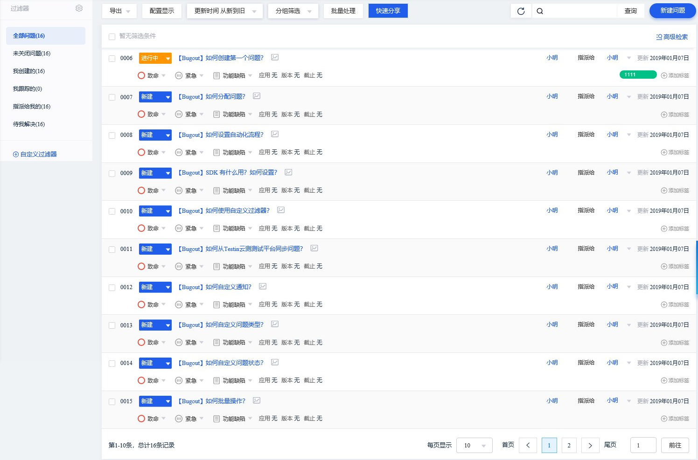

<div class="clearfix">
    <app-breadcrumb [moduleName]="'问题跟踪'" [pageName]="'问题列表'" [homeRoute]="'bug'"></app-breadcrumb>
    <div class="portlet light bordered space-top-10">
        
    </div>
</div>


